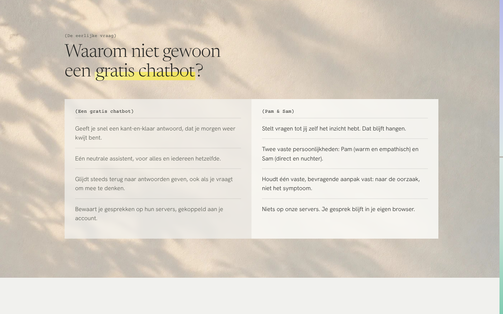
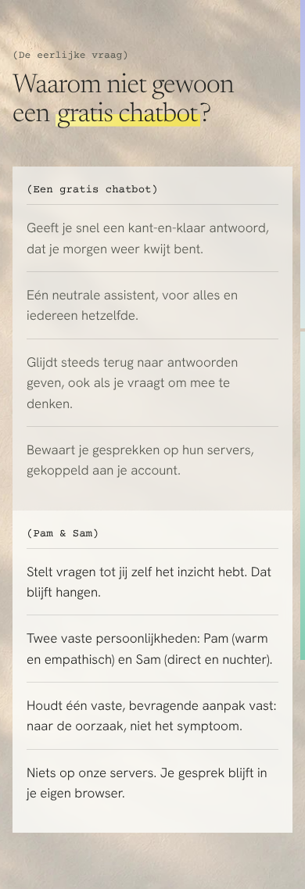
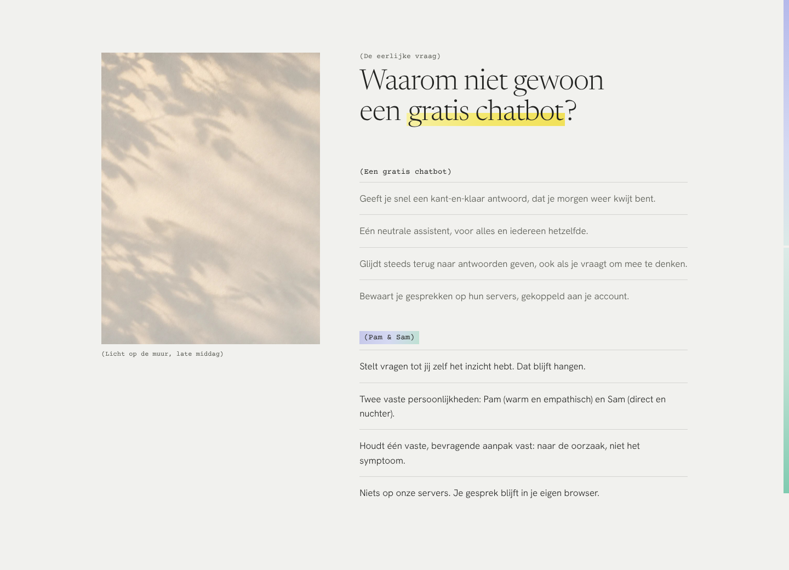
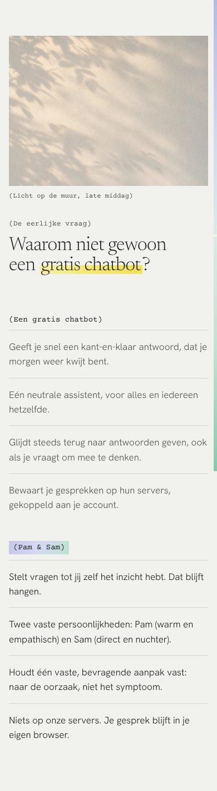
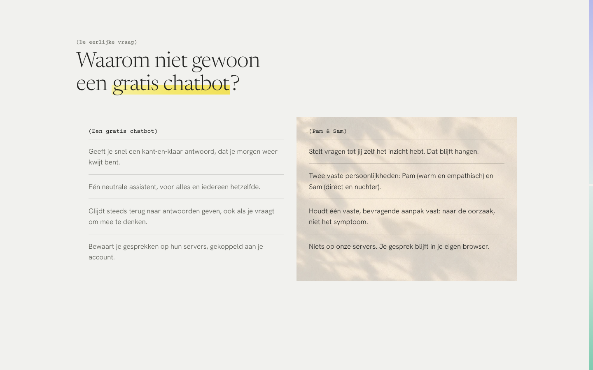
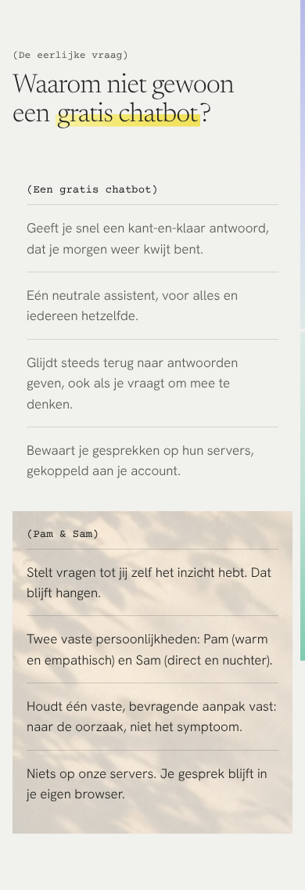

Het lichtbeeld op drie manieren in het register: als achtergrond, als plaat in het grid, en alleen achter de kolom van Pam & Sam.


De foto vult de hele sectie. De vergelijking ligt erop als twee vellen; het vel van Pam & Sam is lichter. Het meest sfeervol, maar de foto concurreert met de tekst.


De foto staat als een plaat naast de vergelijking, zoals de foto op de linkerpagina van de spread. Het rustigst: beeld en tekst hebben elk hun eigen plek.


Alleen de kolom van Pam & Sam krijgt het licht. Het beeld draagt de boodschap: hier valt het licht. Het meest eigen, en het enige waarin de foto iets zegt.